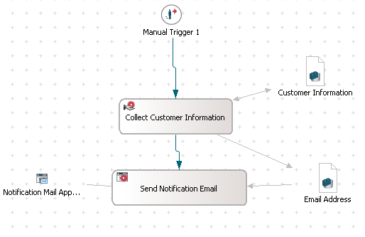
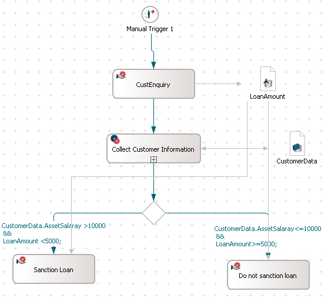
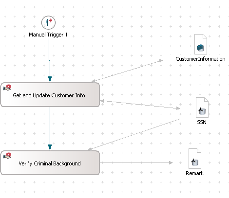

With no option to deploy different models in one audit trail, you have the following restrictions:
The concept of deploying several different models allows:
The following organization scenario explains how Stardust can help you reduce the efforts of modeling same process flows frequently.
The organization caters to different needs of customers such as Opening Accounts, Issuing Credit Cards, Loans, Insurance etc. Different business process flows are defined for each of these segments. In each of the process flow, one process is common and that is taking customer information.
To avoid creation of the same process, the organization has decided to use the same process in all the other processes where customer information is needed. Here is the twist. They had to either copy the process in all the other process flows or create similar process in all other processes. Using Stardust, they can use the same process in all the other processes.
To achieve this, the organization can have the following approach to create the models:
This section describes the common usage pattern for models serving as base libraries with structured types, applications and process definitions.
This use case identifies the structured types, applications and processes in the workflow of an organization that can be used and hence referenced from any different model. The created model should act as the library of the structured type and processes of the organization.
The organization has identified the common process used in all the other processes. This common process is Collect Customer Information.
To reference Collect Customer Information process from all the other processes, you need to create a provider model and define the process interface in it.
The provider model should look like as shown in the following screenshot:

Figure: Provider Model
We have created only a library of structured type, process definition and application.
For step-by-step instructions, please refer to the Creating a Provider Model tutorial.
The created application, structured type and process definition can be referenced from other models. Thus, the created model becomes provider for other models. The next use case describes how it works as a provider.
This section describes the usage pattern for typical process skeletons, where parts like sub-process definitions or structured type might be overwritten in a concrete deployment scenario.
This use case explains how an existing process - Bank Loans - uses already established process definition defined in the organization. In a way, references the process defined in another model.
As the organization has identified the Collect Customer Information process, its another business unit - Bank Loans - is ready to use it in their workflow process.
In the Bank Loans process flow, you have to reference the existing Collect Customer Information process and the Customer Information structured type.
The consumer model should look like as shown in the following screenshot:

Figure: Consumer Model
For step-by-step instructions, please refer to the Creating a Consumer Model tutorial.
A file connection establishes the provider and consumer relationship between the base library model and the existing Bank Loans process. Once the customer specifies the required loan amount, the Collect Customer Information process is triggered. This process is provided by the provider model and we have just referenced it in the consumer model. Thus, the organization could use the already defined process in another model.
The referenced process from the provider model becomes the sub-process in the consumer model.
In this section, specific implementations for sub-processes used in process skeletons are described. To understand the concept, please refer to the Primary Implementation section of the chapter Multiple Implementations of the Concepts book.
This use case explains that due to certain new bank policies some modifications are required in the way customer information is collected. Currently, the Bank Loans process uses the process Collect Customer Information. The implementation of the Collect Customer Information process needs to be adjusted according to changed business needs.
As per new policy, while collecting the customer information the background of that customer should be verified. If the customer comes out clean in the background verification process then that customer is allowed to do any transaction in the bank. So instead of changing the implementation of the Collect Customer Information directly, the Bank Loans segment asked to provide another implementation of that interface. Therefore another implementation of the Collect Customer Information is used.
Creating another implementation does not require to create all the elements again. We can still refer some of the elements of the already existing process definition.
For more information, please refer to chapter Modifying Implementation of the Stardust Portal documentation.

Figure: Example Model
The new implementation of process Collect Customer Information is used at runtime. This change will affect across the organization. Business units that were using Collect Customer Information process, now have the implementation of new interface of Collect Customer Information for Verification.